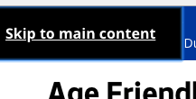
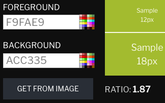
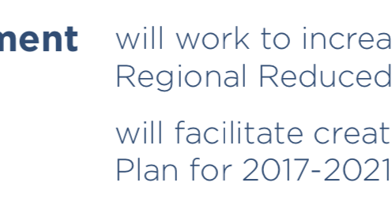

Age Friendly Seattle: Making its Documents Age-Friendly
Jonathan Pool, Web Accessibility Researcher, geezer.pro
geezer.pro report 1
Revision date: 27 April 2018
Introduction
Age Friendly Seattle is an initiative launched by the city of Seattle in 2017. It conducts programs seeking to make Seattle “a community in which people can grow up and grow old with ease”.
One of the domains in which it acts is communication and information. “Age Friendly Seattle promotes accessible print and digital communications”. Age Friendly Seattle’s website sets an example by offering substantial support to users with disabilities.
However, the example is not perfect. Improvements to the accessibility of the Age Friendly Seattle website would allow users with disabilities, including age-related impairments, to consume the information published there more easily and completely.
HTML documents
The website of Age Friendly Seattle contains, mostly, HTML documents. They incorporate significant accessibility features. Some features, however, are misconfigured or missing. Greater accessibility can be achieved with corrections.

One case of misconfiguration is that of the skip links of the website’s pages. To see a skip link, go to the Age Friendly Seattle home page or any of its other pages and press the tab key. A link labeled “Skip to main content” appears in the upper-left corner. The purpose is to help keyboard-only users (who may not use a mouse because of blindness, low vision, tremors, paralysis, etc.) avoid tedious navigation by skipping over the boilerplate links and proceeding to the page’s unique content with a single keypress. In this case, however, activating the skip link takes you to the Seattle web site’s main content, not to the content of the page that you were on (try it!). This surprising result counteracts the purpose of a skip link. Instead of facilitating navigation, it complicates navigation, taking you completely off the page you were on and forcing you to find your way back there. This defect appears also on pages of other units of the Seattle government website, so a repair may entail inter-agency coordination.
The HTML pages on the site need other improvements for accessibility. Among the remaining issues are:
- an invisible navigation menu hidden along the right edge of the page
- carousel-control buttons misconfigured as links
- misleveled headings
PDF documents
Some of the information available from the Age Friendly Seattle website is published only as PDF documents. This fact alone creates barriers to accessibility. PDF documents can be accessible, but only with difficulty, both for the document creator and for the document consumer. That is not just the opinion of PDF critics. Adobe created the PDF standard, but Rob Haverty, Adobe’s Senior Product Manager for Document Cloud Accessibility, has argued that PDF is not an appropriate format where accessibility, rather than exact visual replication, is the goal.
Age Friendly Seattle’s PDF documents are relatively accessible, compared with many other PDF documents, but flaws will impair your experience if you have certain disabilities.
Let’s begin with the document titles. An accessible PDF document displays a human-intelligible title. But these PDF documents display titles such as “Flyer_AgeFriendlySeattle_8Domains.pdf”, instead of human-oriented titles like “The 8 Domains of Livability”.

Now consider visibility. One of the PDF documents begins with a graphic image depicting 8 domains. If you are blind and using a screen-reading device, it will read out loud the image’s hidden alternative text, which fully describes the image content. But what if you have poor vision, instead? Then you may be using your eyes rather than an assistive device. If so, you won’t see that alternative text, and it may be difficult or impossible to read the domain descriptions, for two reasons:
- First, the contrast between the light-olive text and the medium-olive background is sub-standard. That contrast is measured at 1.87, but the WCAG 2.0 1.4.3 AA standard of accessibility requires such large text to have a contrast of at least 3.
- Second, if you can’t distinguish the text, you might try to compensate by copying it out of the image and pasting it into a text editor, where you could view it as black on white. But you can’t do that. The text is not real text. It’s just pixels in the image. The WCAG 2.0 1.4.5 AA standard requires text to be real text, rather than images of text, in cases like this.

Much of the text in another Age Friendly Seattle PDF document is light blue, on a white background, which creates a color contrast of 2.74, lower than the 4.5 contrast required by WCAG 2.0 1.4.3 AA standard for ordinary-size text.
Giving information graphically is risky for accessibility. In one PDF document, Age Friendly Seattle says that “A wave of growth is expected for King County’s population aged 60+”. That text is accessible. But the page uses graphics to provide additional information: that the 60+ population’s fraction of the total population is expected to increase from 15% in 2015 to 25% in 2040. How will you understand that additional fact if you are blind and using a screen reader? In at least one popular configuration, the screen reader will read the above-quoted sentence, then read the entire content of the box to its right (about “Soaring house costs”), and then read “15%, 2015, 25%, 2040”, omitting the right-pointing arrow. All in all, this will probably leave you mystified about what the 15% and 25% refer to. To experience this, play the recording below.
Defects in PDFs like those described above could be remediated to some extent with editing. But would that be a good investment of effort? What is important here is the information, not the layout. In fact, it’s ideal if the layout varies with the size of the user’s display. Therefore, to make this information accessible, Age Friendly Seattle would most rationally republish it as HTML documents within its website. As long as accessibility standards are observed, such HTML pages would be age-friendly in ways that PDF documents could not hope to be.
Conclusion
Making information more accessible to consumers of all ages and abilities is not easy, and in fact is a never-ending process, but it is possible. Age Friendly Seattle has endorsed and begun to achieve this objective. More work remains to be done. Existing HTML pages and PDF documents will require remediation for accessibility. In the future, however, if Age Friendly Seattle can incorporate accessibility into its workflow from the start of each publication activity, accessibility will become easier, less expensive, and more consistent.